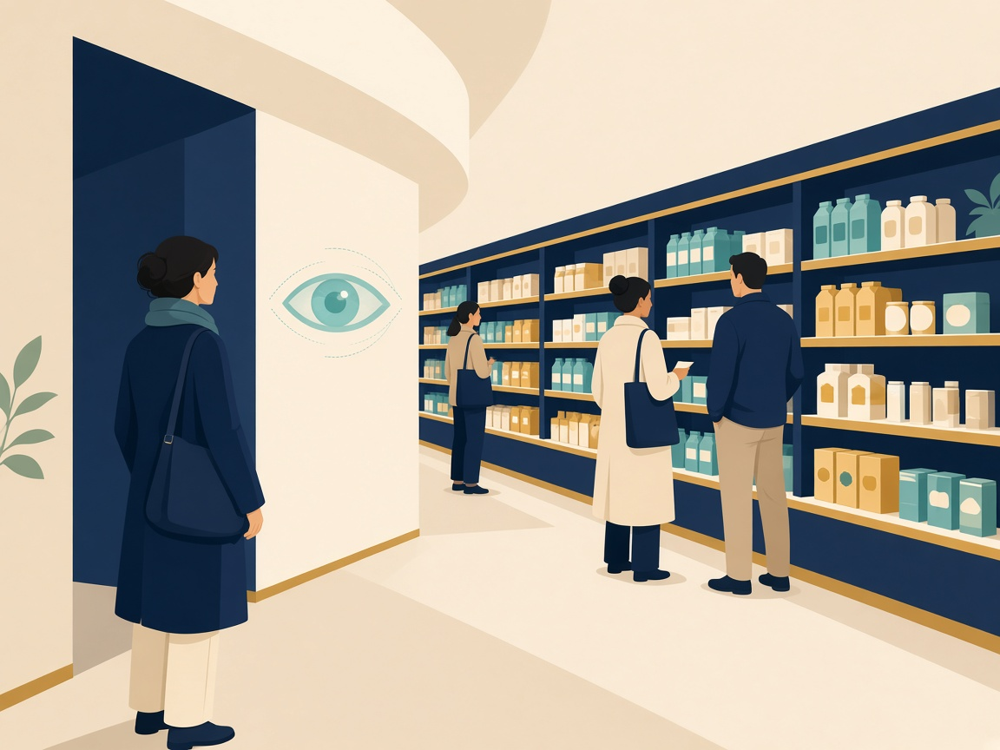

Observations
الملاحظات
مفهومها
طريقة نوعية يراقب فيها الباحثون سلوكيات وأفعال الأفراد مباشرة دون سؤالهم.
متى تُستخدم؟
لجمع بيانات سلوكية دقيقة الحدوث حالياً وبتكلفة منخفضة، ودون إزعاج الأفراد بالأسئلة.
- لا يوجد سؤال
- السلوك يحدث الآن
- مراقبة أو تتبع نقرات
